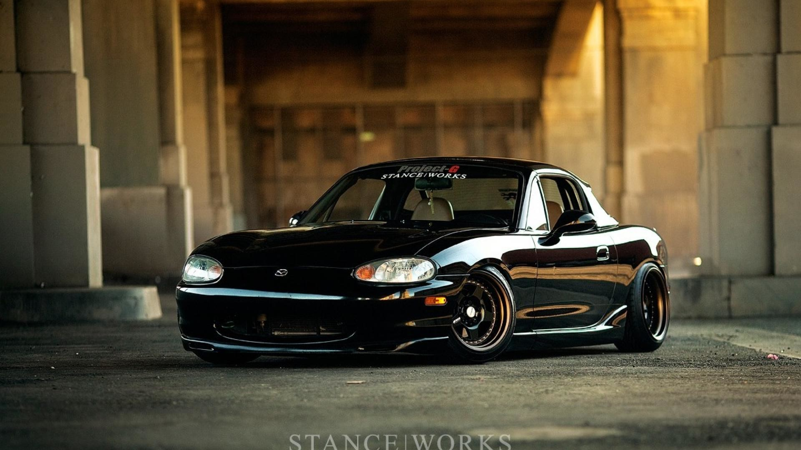
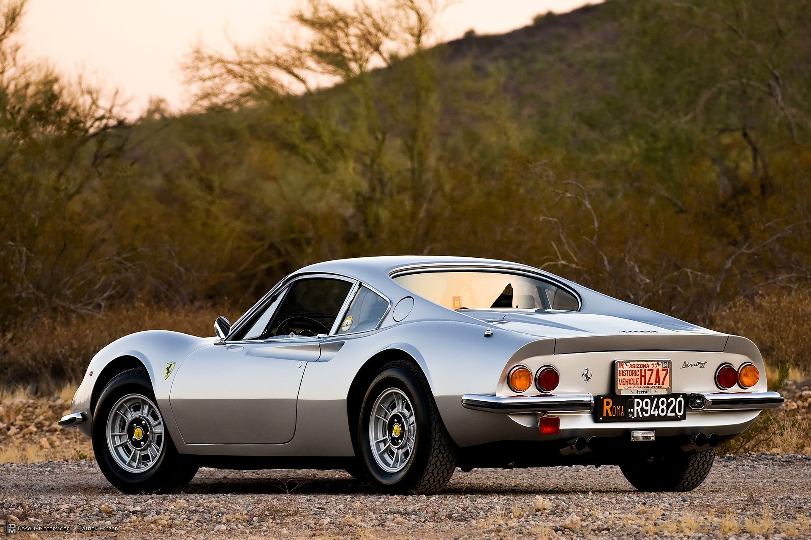

Інформаційний портал для поціновувачів класичних автомобілів
Даний сайт призначений для ознайомлення з переліком класичних автомобілів, перегляду матеріалів, історії, цікавих фактів та технічних даних для будь-яких цілей.
Сайт міститиме категорії автомобілів: Американські, Європейські, Японські, Інші, З кіно, з можливістю сортування за роками випуску, марками та моделями, а також пошук моделей.


- Фото
- Фото базових комплектацій
- Креслення
- Фото тюнінг-варіантів
- Технічні дані
- Лінійні розміри
- Характеристики двигуна
- Характеристики інших компонентів і вузлів
- Історія моделей
- Цікаві факти